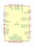
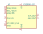
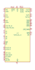
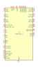
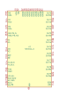
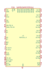

| Symbol |
Description |
ADF4002BCPZ | Description: 400MHz Bandwidth Frequency Synthesizer, LFCSP-20
Keys: Analog Devices PFD
Datasheet: https://www.analog.com/media/en/technical-documentation/data-sheets/ADF4002.pdf |
ADF4002BRUZ | Description: 400MHz Bandwidth Frequency Synthesizer, TSSOP-16
Keys: Analog Devices PFD
Datasheet: https://www.analog.com/media/en/technical-documentation/data-sheets/ADF4002.pdf |
ADF4158 | Description: 0.5-6.1GHz fractional-N PLL, LFCSP-24
Keys: fractional-N PLL
Datasheet: https://www.analog.com/media/en/technical-documentation/data-sheets/ADF4158.pdf |
ADF4350 | Description: 137.5-4400MHz fractional-N PLL, LFCSP-32
Keys: fractional-N PLL
Datasheet: https://www.analog.com/media/en/technical-documentation/data-sheets/ADF4350.pdf |

ADF4351 | Description: 35-4400MHz fractional-N PLL, LFCSP-32
Keys: fractional-N PLL
Datasheet: https://www.analog.com/media/en/technical-documentation/data-sheets/ADF4351.pdf |
CDCVF2505 | Description: Clock Phase-Lock Loop Clock Driver, 24-200MHz, 3.3V, SOIC-8/TSSOP-8
Keys: pll clock driver
Datasheet: http://www.ti.com/lit/ds/symlink/cdcvf2505.pdf |

CS2000-CP | Description: Fractional-N Clock Synthesizer & Clock Multiplier, MSOP-10
Keys: Clock Synthesizer Multiplier
Datasheet: https://statics.cirrus.com/pubs/proDatasheet/CS2000-CP_F3.pdf |
ICS525-01R | Description: User configurable clock up to 160 MHz, SSOP-28
Keys: Configurable clock
Datasheet: https://www.idt.com/document/dst/525-01-02-datasheet |
ICS525R-02 | Description: User configurable clock up to 200 MHz, SSOP-28
Keys: Configurable clock
Datasheet: https://www.idt.com/document/dst/525-01-02-datasheet |

Si5342A-D | Description: Jitter Attenuator/Clock Multiplier, 2 channel, Fractional, 0.001-1028 MHz, QFN-44
Keys: Clock Jitter Attenuator Multiplier
Datasheet: https://www.silabs.com/documents/public/data-sheets/Si5345-44-42-D-DataSheet.pdf |
Si5342B-D | Description: Jitter Attenuator/Clock Multiplier, 2 channel, Fractional, 0.001-350 MHz, QFN-44
Keys: Clock Jitter Attenuator Multiplier
Datasheet: https://www.silabs.com/documents/public/data-sheets/Si5345-44-42-D-DataSheet.pdf |
Si5342C-D | Description: Jitter Attenuator/Clock Multiplier, 2 channel, Integer, 0.001-1028 MHz, QFN-44
Keys: Clock Jitter Attenuator Multiplier
Datasheet: https://www.silabs.com/documents/public/data-sheets/Si5345-44-42-D-DataSheet.pdf |
Si5342D-D | Description: Jitter Attenuator/Clock Multiplier, 2 channel, Integer, 0.001-350 MHz, QFN-44
Keys: Clock Jitter Attenuator Multiplier
Datasheet: https://www.silabs.com/documents/public/data-sheets/Si5345-44-42-D-DataSheet.pdf |
Si5344A-D | Description: Jitter Attenuator/Clock Multiplier, 4 channel, Fractional, 0.001-1028 MHz, QFN-44
Keys: Clock Jitter Attenuator Multiplier
Datasheet: https://www.silabs.com/documents/public/data-sheets/Si5345-44-42-D-DataSheet.pdf |

Si5344B-D | Description: Jitter Attenuator/Clock Multiplier, 4 channel, Fractional, 0.001-350 MHz, QFN-44
Keys: Clock Jitter Attenuator Multiplier
Datasheet: https://www.silabs.com/documents/public/data-sheets/Si5345-44-42-D-DataSheet.pdf |
Si5344C-D | Description: Jitter Attenuator/Clock Multiplier, 4 channel, Integer, 0.001-1028 MHz, QFN-44
Keys: Clock Jitter Attenuator Multiplier
Datasheet: https://www.silabs.com/documents/public/data-sheets/Si5345-44-42-D-DataSheet.pdf |
Si5344D-D | Description: Jitter Attenuator/Clock Multiplier, 4 channel, Integer, 0.001-350 MHz, QFN-44
Keys: Clock Jitter Attenuator Multiplier
Datasheet: https://www.silabs.com/documents/public/data-sheets/Si5345-44-42-D-DataSheet.pdf |

Si5345A-D | Description: Jitter Attenuator/Clock Multiplier, 10-channel, Fractional, 0.001-1028 MHz, QFN-64
Keys: Clock Jitter Attenuator Multiplier
Datasheet: https://www.silabs.com/documents/public/data-sheets/Si5345-44-42-D-DataSheet.pdf |
Si5345B-D | Description: Jitter Attenuator/Clock Multiplier, 10-channel, Fractional, 0.001-350 MHz, QFN-64
Keys: Clock Jitter Attenuator Multiplier
Datasheet: https://www.silabs.com/documents/public/data-sheets/Si5345-44-42-D-DataSheet.pdf |

Si5345C-D | Description: Jitter Attenuator/Clock Multiplier, 10-channel, Integer, 0.001-1028 MHz, QFN-64
Keys: Clock Jitter Attenuator Multiplier
Datasheet: https://www.silabs.com/documents/public/data-sheets/Si5345-44-42-D-DataSheet.pdf |
Si5345D-D | Description: Jitter Attenuator/Clock Multiplier, 10-channel, Integer, 0.001-350 MHz, QFN-64
Keys: Clock Jitter Attenuator Multiplier
Datasheet: https://www.silabs.com/documents/public/data-sheets/Si5345-44-42-D-DataSheet.pdf |